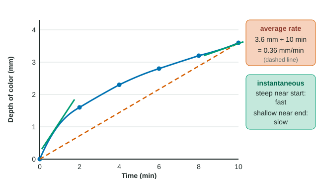

How fast, and by how much
Drop a cube of clear agar into colored solution. Color moves in from every face by diffusion, down its concentration gradient. After 2 minutes it is 1.6 mm deep; after 10 minutes, 3.6 mm. Two questions follow every experiment like this: how fast did it change (a rate), and how big was the change compared with where it started (a percent change)? Both are on the formula sheet.
Worked example: average rate over different intervals

Data: depth of color 0, 1.6, 2.3, 2.8, 3.2, 3.6 mm at 0, 2, 4, 6, 8, 10 min.
Formula: rate = change in y ÷ change in x.
- Whole run: (3.6 − 0) mm ÷ (10 − 0) min = 0.36 mm/min.
- First 2 minutes: (1.6 − 0) ÷ 2 = 0.80 mm/min.
- Last 2 minutes: (3.6 − 3.2) ÷ 2 = 0.20 mm/min.
The average rate over an interval is the slope of the straight line joining its two end points. When the graph is curved, the average hides a rate that is changing: here the color moved four times faster in the first 2 minutes than in the last 2. The rate at a single instant, the instantaneous rate, is the slope of the curve at that point; on a curve that flattens, it falls over time.
Why does it fall? Near the surface at the start, high concentration outside sits right next to zero concentration inside: a steep gradient. As the colored layer thickens, the same concentration difference is spread over a longer distance, so the gradient at the moving front is less steep and net diffusion slows.
Worked example: percent change
Formula: percent change = (final − initial) ÷ initial × 100.
The rate of color movement fell from 0.80 mm/min to 0.20 mm/min: (0.20 − 0.80) ÷ 0.80 × 100 = −75%.
Root hairs raise a root's surface area from 40 cm² to 130 cm²: (130 − 40) ÷ 40 × 100 = +225%.
Always divide by the initial value, and keep the sign: negative means a decrease. Percent changes do not simply add or cancel. A culture of 400 bacteria that falls by 50% (to 200) and then rises by 50% ends at 300, because the second 50% is taken of 200.
Percentage points versus percent change
In cubes of three sizes left in colored solution for 10 minutes, the color moved about 3.6 mm in from every face. The share of the cube that colored depended on size:
| Side (cm) | Surface area (cm²) | Volume (cm³) | SA : V (cm⁻¹) | Volume colored (%) |
|---|---|---|---|---|
| 1 | 6 | 1 | 6.0 | 97.8 |
| 2 | 24 | 8 | 3.0 | 73.8 |
| 3 | 54 | 27 | 2.0 | 56.1 |
From the 1 cm to the 3 cm cube, the colored share fell from 97.8% to 56.1%. The difference is 41.7 percentage points. The percent change is (56.1 − 97.8) ÷ 97.8 × 100 = −42.6%. These are different numbers that answer different questions; an exam answer must say which it means.
The biology behind the table: as a cube grows, its surface area grows with the side squared but its volume with the side cubed, so SA : V falls. With the same depth reached from each face, a smaller share of a large cube is supplied by diffusion, which is one reason cells stay small.
Units and metric prefixes
| Prefix | Symbol | Factor | Example |
|---|---|---|---|
| kilo | k | 10³ | 1 kg = 1,000 g |
| centi | c | 10⁻² | 1 cm = 0.01 m |
| milli | m | 10⁻³ | 1 mL = 0.001 L |
| micro | µ | 10⁻⁶ | 1 µm = 0.001 mm |
| nano | n | 10⁻⁹ | 1 nm = 0.001 µm |
A bacterium 2 µm long is 2 × 10⁻³ mm. Areas and volumes convert by the squared and cubed factors: since 1 mm = 1,000 µm, 1 mm² = 10⁶ µm² and 1 mm³ = 10⁹ µm³. A cube-shaped cell 10 µm on a side has a volume of 1,000 µm³ = 10⁻⁶ mm³. Converting the length first (10 µm = 0.01 mm, then 0.01³) gives the same answer and avoids the trap.
Reporting a rate
- Name the interval: "between 8 and 10 minutes".
- Give units as y-unit per x-unit: mm/min, °C/min, mg/h.
- For a decrease, either keep the minus sign or say "a decrease of".
- Round as the question asks, and only at the end.